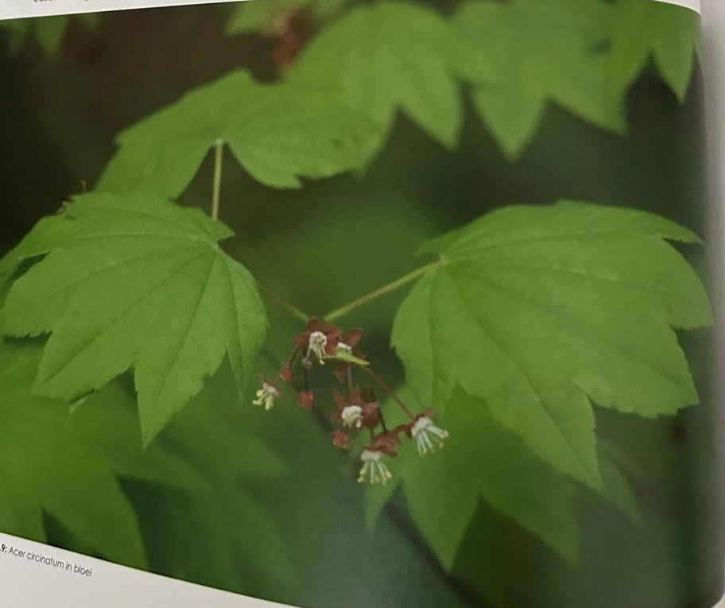
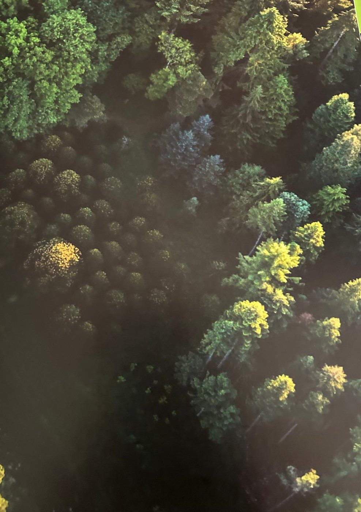

Groepen › Nieuwe Wereld
2. Brits Columbië, Kustgebergte

Naarmate we verder zuidwaarts afdalen langs de Pacificische kust, richting de Canadese meest westelijke provincie Brits-Columbia, voegen zich meer boomsoorten aan het Westamerikaanse bossengamma toe. Het zijn in overgrote meerderheid naaldhoutsoorten, die profiteren van de hoge vochtigheidsgraad in het kustgebied en er heuse regenwouden vormen. De neerslag, ook in de vorm van winterse sneeuw en zomerse mist, loopt hier op boven 2000 mm tot 4000 mm per jaar. Hier duiken de eerste cipresachtigen op, gekenmerkt door het schubvormige bladgroen en de vezelige schors die uit lange repen lijkt te zijn samengesteld : de Reuzenlevensboom en de endemische (enkel hier voorkomende) Nootkaschijncypres. Naast de hemlocks rijst hier ook voor het eerst de welbekende Gewone douglasspar op, op rijpere leeftijd onmiddellijk te herkennen aan de dikke, ruwe kurkachtige schors. Langs de zuidzijde wordt de groep afgeboord door een rij jongere Reuzenzilversparren, ook bekend als Vancouverden. De meeste van deze boomsoorten bereiken op Vancouver Island en omliggende na enkele honderden jaren reusachtige afmetingen, meerdere meters dikte en hoogtes over 60, 80 en in het geval van douglas zelfs 100 meter. Of zij die afmetingen hier in Tervuren, in minder gunstige omstandigheden ooit zullen halen is hoogst twijfelachtig. Wat ook ontbreekt voor een natuurlijk bosbeeld, zijn de dikke pakken mossen die in het oorsprongsgebied de takken van de bomen omzwachtelen.
Uit het boek
0,98 ha · 12 soorten · 368 bomen
- Brits-Columbia: 2A is sitkaspar–hemlock met Nootkacipres, 2B douglas–hemlock.
- Het Great Bear Rainforest, land van de witte "spirit bear", is het model.
- In 1992 kwam aan de zuidkant van 2B een gordel reuzenzilversparren: een wand van reuzenkerstbomen. Fijngewreven naalden ruiken naar citrus.
- De ranke esdoorn is de enige esdoorn die zich afleggert.
- In houtvolume staat er aan deze kust ongeveer 1000 keer meer naald- dan loofhout.


Bron: Geografisch Arboretum Tervuren. Een wereldreis rond bomen (2020), p. 88 en volgende.
Deelgroepen
- 2A – Britisch Columbia - West Vancouver Isle
- 2B – Britisch Columbia - Strait of Georgia
Soorten in deze groep (12)
- Tsuga heterophyllaWest-Amerikaanse hemlockspar · 188 bomen
- Abies grandisReuzenzilverspar · 75 bomen
- Pseudotsuga menziesiiGewone douglasspar · 28 bomen
- Xanthocyparis nootkatensisNootkaschijncipres · 28 bomen
- Picea sitchensisSitkaspar · 20 bomen
- Thuja plicataReuzenlevensboom · 12 bomen
- Alnus rubraRode els · 7 bomen
- Crataegus columbiana4 bomen
- Acer circinatumAmerikaanse rondbladesdoorn · 3 bomen
- Acer macrophyllumGrootbladesdoorn · 1 boom
- Cornus stolonifera1 boom
- Mahonia aquifoliumMahonia · 1 boom
Tekst en foto: arboretum-tervuren.be (Koninklijke Schenking), met toestemming gebruikt.